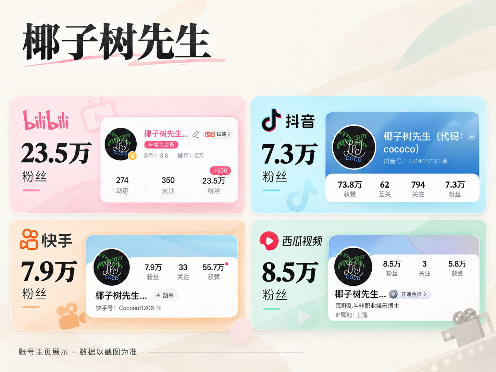
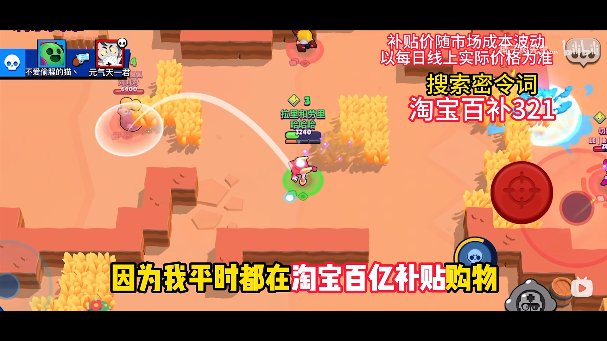
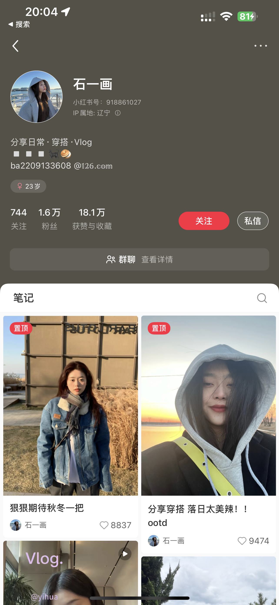
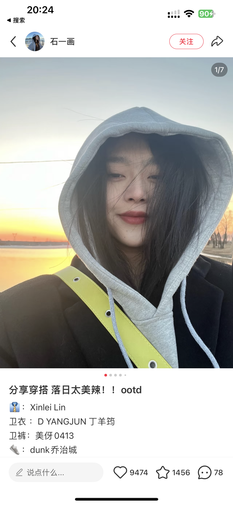
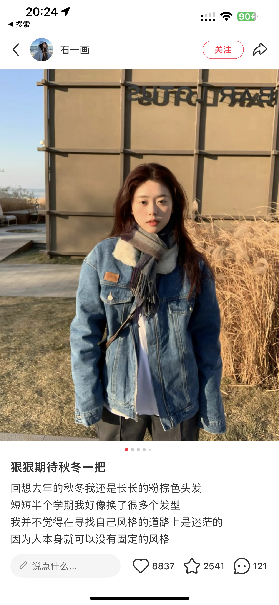
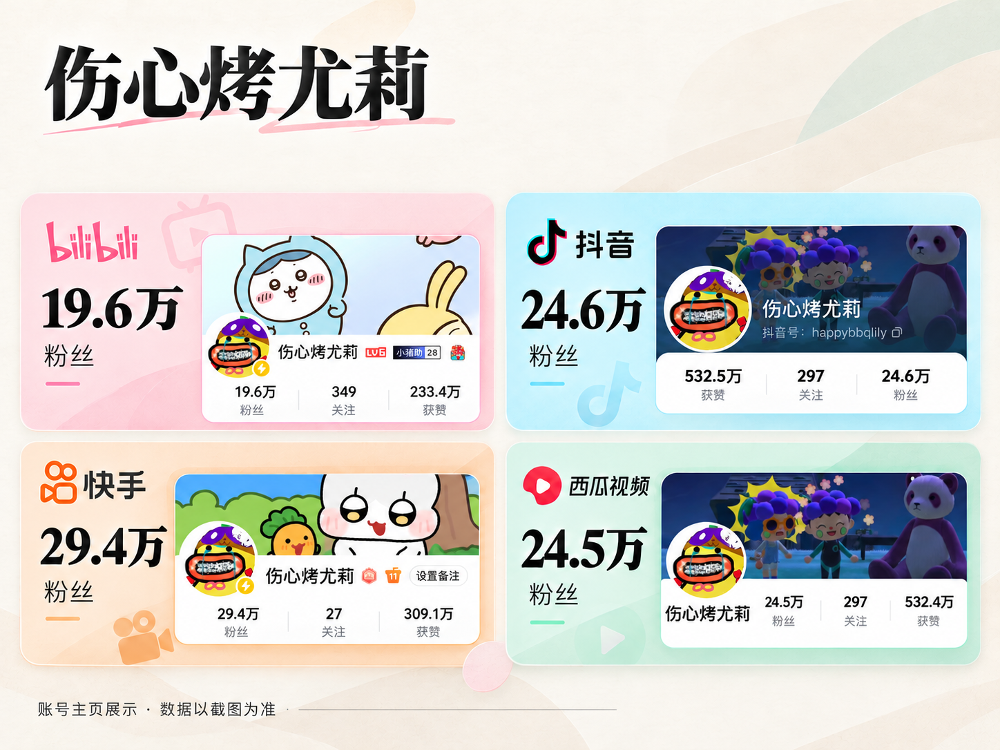

CASE 01独立运营
个人账号「椰子树先生」
独立完成账号定位、选题、脚本、剪辑与数据复盘，持续测试并优化内容方向。

四个平台账号主页截图 · 数值以各截图显示为准，与前文历史统计时间可能不同。
我的职责
选题策划、内容优化、数据复盘与合作沟通。请根据该作品的实际分工调整。
项目成果
淘宝商业合作视频，B站播放量约 200 万，为该账号播放量最高的视频。

淘宝商业合作视频片段，B站播放量约 200 万，为账号播放量最高的视频。
新媒体运营 · 内容策划 · 视频剪辑
用内容连接用户，让创意带来价值。
独立内容创作与账号运营，参与小红书内容优化及创作者合作。这里展示代表作品、个人职责与项目成果。
以上为个人账号截至 2026 年 8 月的数据；具体案例数据单独说明。
精选内容作品，分享项目思路与运营成果。
独立完成账号定位、选题、脚本、剪辑与数据复盘，持续测试并优化内容方向。

四个平台账号主页截图 · 数值以各截图显示为准，与前文历史统计时间可能不同。
选题策划、内容优化、数据复盘与合作沟通。请根据该作品的实际分工调整。
淘宝商业合作视频，B站播放量约 200 万，为该账号播放量最高的视频。

淘宝商业合作视频片段，B站播放量约 200 万，为账号播放量最高的视频。
协助账号定位、文案与视频风格调整，参与数据复盘及商单对接；内容拍摄与日常内容把控由博主本人负责。

选题策划、内容优化、数据复盘与合作沟通。请根据该作品的实际分工调整。
粉丝与点赞持续增长，获得数个稳定合作商家。可补充参与阶段的数据对比或商单案例。


以上为账号公开笔记的作品与互动数据截图；本人负责早期定位、文案与风格建议、数据复盘及商单对接，拍摄与日常内容把控由博主本人负责。
负责合作视频策划、剪辑与运营，参与平台迁移、数据复盘及商单对接。

选题策划、内容优化、数据复盘与合作沟通。请根据该作品的实际分工调整。
2023 年 2 月至年底参与期间，全网粉丝从几千增长至约 30 万；合作内容全网约数百万播放。
首次与尤莉联合创作的陪玩主题视频，展示双方合作及作品表现。
内容策划与脚本｜视频剪辑｜数据复盘｜达人合作
熟练掌握剪映；会使用 PowerPoint、Adobe Illustrator；使用 Excel 透视表、GPT 与 Claude Code 辅助工作。